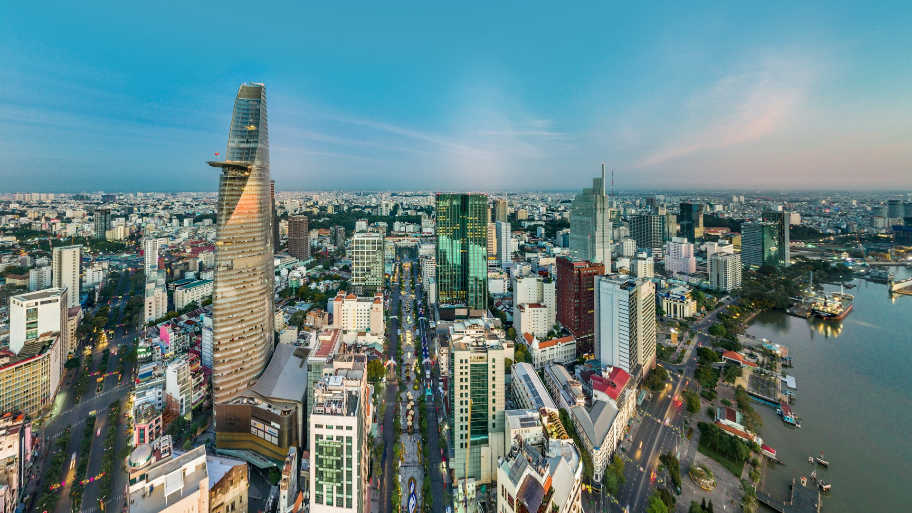

Located in South East Asia, Vietnam is the eastern edge of Indochina. Vietnam has a very diverse landscape from mountainous terrain, forests, wetlands, and a long coastline. There are plenty of breath-taking views in Vietnam.
Filial Piety
Filial Piety is critical part in Vietnamese culture. In many homes you can find altars of paintings, incense candles, food offerings to loved passed ones.
Major Celebrations
Tết(Vietnamese new years) is one of the largest celebrations held in Vietnam. Family often come together to celebrate and it is common for many small businesses to close during the celebration period. Cuisines such as Bò Kho, a rich and expensive, beefy dish is served to commemorate the new year. Additionally, lucky red envelopes, filled with money, are often given to children in celebration of the new year.
Hình
Photos of Vietnam

A picture of the vibrant Saigon city skyline @Peter Nguyen
Located in Bà Nà Hills resort this breath-taking bridge atracts tourists from all over the world @Andreea Popa
A photograph of Vietnam's northern coastline, located in the city Hạ long@Ammie Ngo
The Áo Dài is a staple garment for Vietnamese culture. It is usually made with silk and worn on special occasions such as Vietnamese New Years, Tết. @Dung Anh